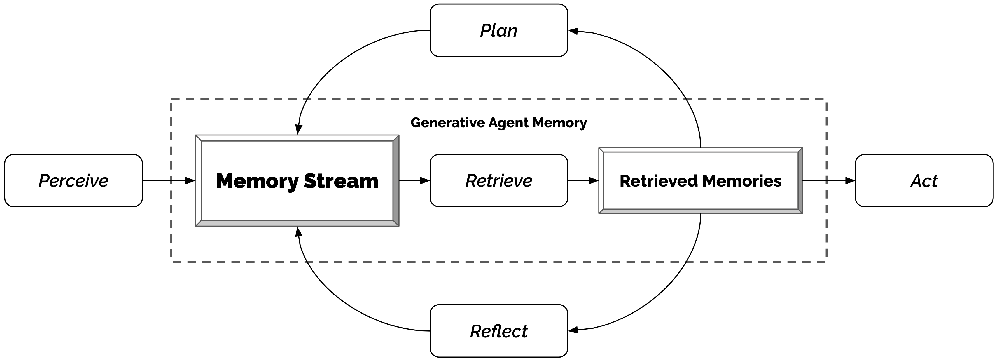
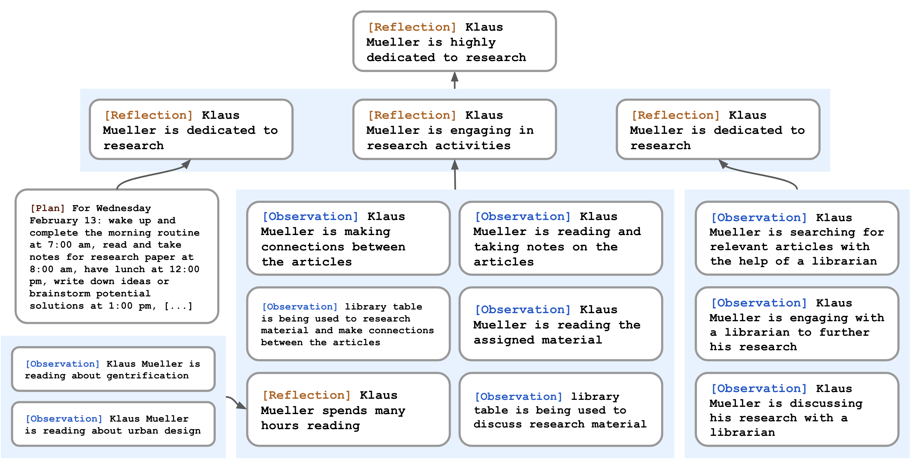
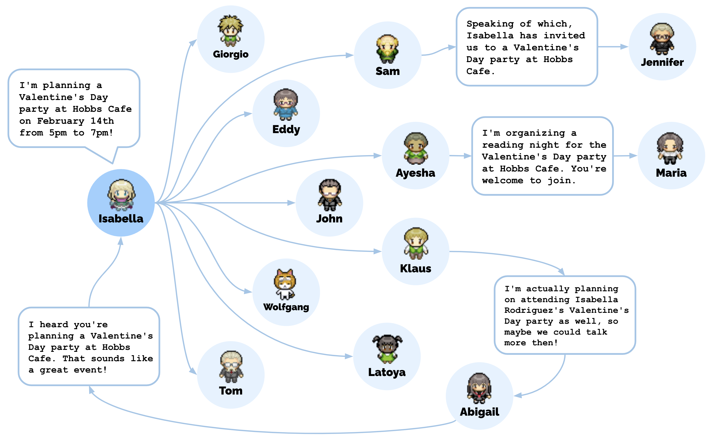

01研究背景与问题定义
一个角色说出一句符合人设的话，并不意味着它能连续生活两天。它需要记住别人昨天发出的邀请，从多次交往中形成对别人的判断，把约定放进今天的日程，还要在遇到突发事件后调整安排。如果每一刻只问语言模型“现在应该做什么”，当前选择可以各自合理，整段行为却可能互相冲突。论文举出的失调是：角色在中午、半小时后、再半小时后都决定吃午饭。
这篇论文研究的是行为的可信度（believability）：观察者是否觉得角色像一个有经历、有倾向、行为前后连贯的人。作者把 25 个角色放进手工构建的 Smallville 小镇，用大语言模型生成行为。目标是减少逐个编写生活脚本的负担，让交往、信息传播和活动协调能从局部互动中形成；这与验证人类心理机制、预测真实社会规律是不同的证明任务。
问题从生成一句话，转向维护一段生活
| 具体失效 | 为什么会影响后续行为 | 论文改变的对象 |
|---|---|---|
| 经历越来越多，当前提示容纳不下 | 关键邀请可能被日常琐事淹没；统一摘要又容易丢掉具体的人、时间与事件。 | 保存完整经历，按当前情境选择少量记忆进入提示。 |
| 记住事件，不等于形成稳定判断 | 多次看到某人研究、阅读，仍需归纳其兴趣，才能影响交往与选择。 | 把有来源的高层推断也存成可检索记忆。 |
| 每一步合理，全天安排仍可能失调 | 缺少跨时刻约束，容易重复活动，或知道约定却没有安排赴约。 | 生成可细分、可打断并重排的时间计划。 |
单纯扩大上下文，只是让模型一次能读更多材料，没有决定哪些经历值得被关注；把整段历史压成一段人物总结，又可能丢掉对某次行动至关重要的细节。论文因此保留细粒度经历，同时新增抽象判断与未来计划，让三者在决策时共同被调用。其核心变化是从固定人设条件下的即时生成，转为由不断更新的个人经历来持续约束生成。
从实际操作看，模型参数并未因角色“生活”而更新。系统不断把观察、推断和日程写成文字，存到角色自己的外部记忆中；每次行动前再选择材料放回模型输入。它以存储、检索和额外模型调用，换取跨时刻的连贯性。这种连贯性依赖于材料选得对、归纳没有失真，以及计划能被执行，不能仅由“已经保存全部经历”来保证。
02方法与技术路线
系统使用论文当时的 gpt3.5-turbo。每个角色拥有自己的记忆流和已知环境；游戏提供局部观察，模型据此决定沿用计划还是作出反应。反思按新经历的累计重要性触发，生成的判断与计划都返回记忆流，影响以后而非只影响当前一次回复。
原论文架构图：观察、检索、反思与计划的关系


Memory Stream 与 Retrieval：决定这一次想起什么
角色初始化时，一段描述其职业、性格、家人和熟人的文字，按分号拆为种子记忆。运行中，每条观察以自然语言保存，并带有创建时间和最近访问时间。系统不会把所有经历一起送入模型，而是根据当前查询计算各条记忆的分数。这里把“最近想起过”“对角色很重要”和“与当前事情有关”作为三种不同信号。
| 信号 | 如何产生 | 应当怎样理解 |
|---|---|---|
| 近期性 Recency | 距该记忆最近被访问/检索的游戏小时数为 Δt，原始分数按 0.995Δt 衰减。 | 衡量最近是否被想起，不能直接替换成距事件发生多久。 |
| 重要性 Importance | 创建记忆时，让模型按 1–10 分评价事件的分量，如琐事低、重要关系变化高。 | 是角色经历的重要程度，并非对当前查询的相关性。 |
| 相关性 Relevance | 计算记忆文本与查询文本的 embedding 余弦相似度。 | 随问题改变，让主题相关的旧事也有机会被找回。 |
三项先分别用 min–max 缩放到 [0, 1]，论文中权重均为 1。按总分选取上下文窗口能容纳的高排名记录；正文没有规定所有调用共用一个固定 top-k。
这个加法提供了一种折中：只看相关性，日常琐事可能挤掉对角色很重要的旧经历；只看近期性，又可能遗忘很久以前的约定。但三项都是启发式信号，分数高不等于事实完整，也没有保证多条记录互相一致。检索负责提供可用材料，模型仍需判断如何组合它们。
Reflection：把多次经历变成可再次调用的判断
原始记录回答“见过什么”，反思尝试回答“这些经历意味着什么”。系统在近期感知事件的重要性分数累计超过 150 时启动反思；论文运行中大约每天发生两三次。150 是分数阈值，不是条目数量，也不是固定的每日反思日程。
先提出问题，是为了决定从经历中提炼哪一层信息；再次检索，则让归纳不只依赖最近发生的事情。因为反思可以引用更早的反思，系统逐步形成从具体观察到人物倾向的树状结构。这相当于提前把分散线索组织成判断，使后续一次简短检索也能获得较高层的认识。不过，模型生成的引用只提供可追溯性，论文没有设置独立检查器验证这些记录是否足以推出结论。
论文示例：为什么 Klaus 会选择与 Maria 相处
依据 §4.2 与 Figure 7 作中文转述，非新增运行记录。
- 只有观察：Klaus 与宿舍邻居 Wolfgang 经常擦肩而过，原始交往频率容易使 Wolfgang 成为选择。
- 归纳自己：多次阅读、写作和讨论研究的经历，支持“Klaus 非常投入研究”的反思。
- 归纳他人：从 Maria 努力研究的经历中认识到两人具有共同兴趣，即使具体领域不同。
- 影响选择：当被问到最想与谁共处一小时，带有这些反思的角色选择 Maria。


这个定性例子说明反思希望补上的“跨记录归纳”，不能把它当成对所有人物判断准确率的量化证明。
Planning & Reacting：让日程既有延续性，也能被打断
日计划以人物摘要、前一天的总结和当前日期为输入，先生成 5–8 个大块，再递归分成小时级安排和 5–15 分钟行动。每项安排包含地点、开始时间与持续时长，并作为记忆保存。附录补充了一个重要实现选择：只提前生成高层日程，临近要做某件事时才展开细节，避免整天的精细安排刚生成就因新事件过时。
计划提供跨时刻的约束，反应机制则处理新情况。每步先保存观察，再让模型判断是否继续原安排。观察到别人时，系统分别检索“我与此人的关系”及“与对方当前行为有关的经历”，汇总情境供模型判断。若决定响应，就从反应发生的时刻重建后续计划。是否打断、怎样响应都依赖模型判断；时间表本身没有把角色变成一个有形式化约束保证的调度器。
Dialogue：双方根据各自的经历逐轮回应
如果反应是交谈，发起方结合人物摘要、对对方的记忆和交流意图生成第一句话。接收方把这句话看成新事件，检索自己关于对方和话题的记忆，再结合已有对话生成回复。这个过程持续到一方决定结束。因此，两人可能拥有不同的信息和看法，后续传播也通过实际交谈发生；论文实现并非由一个全知提示一次写完双方的全部台词。
说明性示例：一次派对邀请怎样成为次日行动的依据
依据论文机制构造的最小流程，文字与过程描述为说明用途，不是作者公开的逐步日志。
记录内容与时间，生成重要性分数，加入我的记忆流。
这条链上，“收到”“想起”“决定参加”“写入日程”“实际到场”是不同环节。任意一环缺失，都可能导致角色知情却没有赴约。
Grounding：把文字行动落到程序维护的环境中
小镇不是模型从画面中自行理解的世界。Phaser 负责地图和角色呈现，服务器维护位置、动作和物体状态，并把预设视野内的信息提供给角色。空间用“区域包含子区域或物体”的树表示：每个角色只保有自己知道的部分，探索时扩展，离开后记录可能过时，重新进入时才刷新。
模型决定动作地点时，从空间树顶层开始，逐层选择合适区域，直到具体对象或地点；走到那里所需的路径由传统游戏算法计算。操作物体后的文字状态变化也会询问模型，再由服务器应用。这种分工让语言生成接上可交互环境，但复杂物理规则和场所规范仍需要明确表达，模型不能仅凭一句活动描述可靠补足所有约束。
用户也能进入这条循环：以指定身份与角色交谈，操控已有角色或作为访客进入小镇，或者以角色的“内心声音”提出指令，使其更容易把话语视为行动要求。用户还可直接改写物体状态，让角色在下一次感知时响应变化。这些入口使它成为可被人介入的交互系统，而不只是自动播放的生活记录。
人物摘要也会随经历定期更新并缓存：分别检索核心特征、日常职业和对近期生活进展的感受，概括后与姓名、年龄、性格拼接，供多种提示复用。这是减少重复生成的已实现优化。批量生成双方对话、只重排受影响的计划片段、让多个角色并行执行，则是附录提出的后续优化方向。
03实验设计与结果分析
论文把评价分成两部分：受控访谈检验角色能否依据经历回答得可信，端到端运行观察一个角色群体是否出现信息传播、相互认识和共同活动。两部分共同说明系统的可行性，但评价对象与控制强度不同，不能合并成一个“社会模拟准确率”。
受控访谈：哪些记忆类型有助于角色表现
完整架构先让 25 个角色生活两个游戏日，再从自我认知、记忆、计划、反应、反思五类问题中进行访谈，每类题库含 5 题。100 名评审各查看一个随机分配角色的生活回放和记忆，再对每类抽取的一题比较五种条件的回答，按可信程度排序。作者将这些相对排名转成 TrueSkill 评分；数值越高，表示在这组比较中更常被排在前面。
| 回答条件 | 可访问的经历类型 | μ | σ |
|---|---|---|---|
| 完整架构 | 观察、计划、反思 | 29.89 | 0.72 |
| 无反思 | 观察、计划 | 26.88 | 0.69 |
| 无反思、无计划 | 观察 | 25.64 | 0.68 |
| 众包人类扮演 | 看回放和记忆后，扮演角色作答 | 22.95 | 0.69 |
| 三类均不可访问 | 无法访问记忆流中的观察、计划、反思 | 21.21 | 0.70 |
μ 与 σ 是 TrueSkill 建模的技能均值与标准差；不是百分制准确率，也不是多次独立小镇运行的均值与标准误。人类条件被作者定位为基本行为能力参照，不代表专家上限。
排序显示，原始观察已能提供显著价值，而加入计划、再加入反思，访谈回答进一步改善。作者报告经多重比较校正后，除众包人类与完全消融这一对外，其余两两差异均显著（p < 0.001）。尤其是完整架构与无反思条件的差异，支持高层归纳能为回答提供原始事件之外的帮助；它没有单独证明每个反思都正确，也没有隔离检索三项分数各自的贡献。
端到端运行：信息能传播，记住也不保证赴约
群体评价让 25 个角色自由互动两个游戏日。在初始化时，只有 Sam 知道自己准备竞选，只有 Isabella 知道自己要组织派对；后续不再由用户干预传播。作者在结束时访谈知情情况，并回查记忆中的具体对话确认信息来源；相互认识则要求双方都表示知道对方，才在无向关系图中连边。
| 观察对象 | 报告结果 | 结果能支持到哪里 |
|---|---|---|
| 竞选信息传播 | 1/25 → 8/25（4% → 32%） | 信息从发起者扩散到其他角色，知情回答均找到对话来源。 |
| 派对信息传播 | 1/25 → 13/25（4% → 52%） | 13 人包括组织者，另外 12 人获知派对。 |
| 相互认识的图密度 | 0.167 → 0.74 | 双方知道彼此的关系变多；不等于亲密程度或社会结构真实性。 |
| 派对协调 | 12 名受邀者中 5 人到场 | 部分角色完成了从信息到日程再到行动的衔接，仍有执行缺口。 |
| 该规模的运行成本 | 数千美元 token 额度；现实耗时数天 | 25 角色 × 2 游戏日的整体描述；未给精确 token 数、调用数或成本拆分。 |
比“自发办成派对”更有解释力的，是知情与行动之间的落差。没有到场的 7 人中，3 人解释有其他安排，另外 4 人在事后访谈中表示有参加兴趣，但当天没有安排赴会。这说明群体协调需要多个局部环节同时成功；访谈中表达的参加意愿，并不自动对应实际日程中的安排。该实验展示了协调可以发生，尚未把它变成稳定保证。
这些数字是一次运行的描述统计，不能解释为跨架构、跨随机种子的平均社会表现。成本同样属于当时模型和实现下的整体报告。附录另给出串行架构约“一秒现实时间对应一分钟游戏时间”的速度描述，但不能据此替换整场实验实际花费的数天，更不能推出今天的复现价格。
论文案例：派对邀请如何沿交往关系传播
原论文 Figure 9 与 §3.4、§7.1 的传播案例。


组织者准备、邀请，其他角色转告或进一步约人，这些环节没有被逐个写成共同脚本。其“涌现”含义是局部生成行为形成了群体结果；举办派对的起始意图、人物关系与小镇环境仍由人设定。
失败证据：数据已存下，决策仍可能失真
记忆错误未必来自完全遗忘。Tom 曾取回“到派对上讨论竞选”的片段，却没有取回派对通知，因此回答出“记得要在那里讨论事情，但不确定有没有派对”的矛盾。另一些回答会在真实记录上补写细节，或把模型世界知识误套到同名角色上。它们共同暴露出：外部记忆解决了保存与调用通路，没有自动解决记录组合、证据充分性和虚构世界边界。
随着角色知道的地点增加，行动地点的选择也可能漂移：一些角色开始去原设计用于晚间聚会的酒吧吃午餐，偏离了环境设计者的预期。作者还报告了角色误入已关门商店、把单人浴室当成多人浴室，以及交谈过度正式、过度配合等现象。后者甚至可能使角色吸收他人的兴趣而偏离最初倾向。这些现象使“能产生热闹互动”与“能保持人物差异和情境规范”成为两个需要分别检验的目标。论文中 1.3% 的幻觉比例仅指相互认识访谈的 453 条回答中有 6 条被核查为幻觉，不能当作整套系统的总体幻觉率。
04贡献、局限与综合评价
真正值得保留的思想：把经历组织成持续生成的条件
这篇工作的核心贡献在于架构设计：把自然语言经历作为统一接口，使观察、抽象判断与未来安排可以共同参与决策。其价值不只在于“给模型加数据库”，还在于形成了经历被记录、问题引导检索、归纳再次成为记忆、计划被新观察调整的闭环。即使更换底层语言模型，这种让角色行为依赖个人历史的组织方式仍然具有独立意义。
实验为两个层次提供了证据：同一历史下的访谈排序支持计划与反思材料有助于可信表达；小镇部署展示这些局部机制可以连接成信息传播与共同活动。后者是有意义的系统可行性结果，但并未验证一套可以复现真实人类群体规律的模型。认识到这个分层，才能同时看到工作的创造性和证据边界。
反思让判断可以复用，也让错误可能持续影响后续行为
反思写回后与观察一起参与检索，还可以成为更高层反思的依据。这正是抽象知识能积累的原因，也产生了一个可靠性问题：来源指针证明“从哪里生成”，并不证明“推出得对”。论文已经观察到补写细节与模型先验污染，而没有独立测量错误反思被反复引用后会如何发展。因此，错误经递归归纳而扩大是值得检验的风险，不能当作本文已量化证明的现象。
要区分反思收益来自可靠抽象，还是只来自预先整理材料、减少当场推理的负担，可以在相同调用预算下比较：带证据的高层推断、只重组原始事实的摘要，以及加入证据充分性检查的反思。这样的对照会帮助确定，系统真正需要的是哪一种可复用表示，以及为它增加验证是否值得。
可信表达与真实行为之间，还隔着模型偏好和长期检验
评审判断角色回答是否可信，并不会自动检验这些回答是否符合某个真实人群的行为分布。模型过度礼貌、过度合作的倾向，可能提高表面流畅度，也可能夸大关系增长和活动协调。文中关于兴趣漂移的观察已提示这一问题，但没有跨底层模型或真实人群数据的对照来分离两种影响。若将小镇用于社会研究，就需要进一步检验同一环境和人物设定下，更换模型后哪些群体结果仍保持，以及它们是否符合真实观察。
两个游戏日也不足以说明人物身份、记忆质量和社会关系在长期交互中能稳定维持。随着记录增加，检索遗漏、过时环境知识和人物倾向变化可能相互影响；论文的失败案例已经涉及这几条链。更长时间运行的意义不只是扩大演示规模，而是观察这些偏差是否累积、能否被新经历纠正，以及额外维护成本是否持续增长。
综合来看，这篇论文把语言模型单次扮演角色的能力，扩展成了一个能够持续接收经历、形成判断并安排生活的交互系统。最值得学习的是外部记忆如何参与生成，以及抽象与规划如何把不同时间的行动连接起来。现有证据支持这种设计能提高短期角色表现的可信度，并产生若干群体现象；它的有效性仍取决于检索、归纳、日程落实和环境表达，真实社会预测与长期稳定性则需要更强的验证。